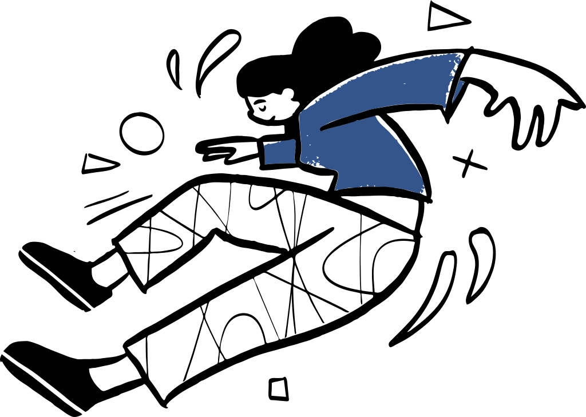

projetos
criação digital como parte do trabalho acadêmico e educativo
estes projetos organizam informação, escuta e aprendizagem em formatos públicos. não são apenas interfaces: são modos de tornar uma pesquisa ou uma prática educativa mais acessível, situada e compartilhável.

-
01
narrativas em medicina
espaço público da pesquisa de doutorado sobre experiências de mulheres na formação médica. o projeto apresenta a investigação, seus cuidados éticos e caminhos de participação, procurando comunicar a pesquisa sem reduzir a complexidade das narrativas que a sustentam.
visitar projeto ↗ -
02
aulas — cursinho popular
ambiente de apoio às aulas e aos materiais do cursinho popular. reúne percursos de estudo, propostas de leitura e recursos didáticos pensados para tornar o processo de aprendizagem mais organizado sem perder o vínculo com as perguntas concretas dos estudantes.
visitar projeto ↗ -
03
vem pro bict
projeto de orientação e comunicação sobre o Bacharelado Interdisciplinar em Ciência e Tecnologia. sua proposta é deixar mais legíveis os percursos possíveis, as formas de ingresso e os atravessamentos de uma formação interdisciplinar.
visitar projeto ↗ -
04
pontes digitais
podcast realizado no contexto da UFABC, dedicado às relações entre educação, tecnologia e aprendizagem. seus dois episódios organizam perguntas sobre inteligência artificial, memória e processos de formação em uma linguagem sonora acessível, sem simplificar os problemas que os movem.